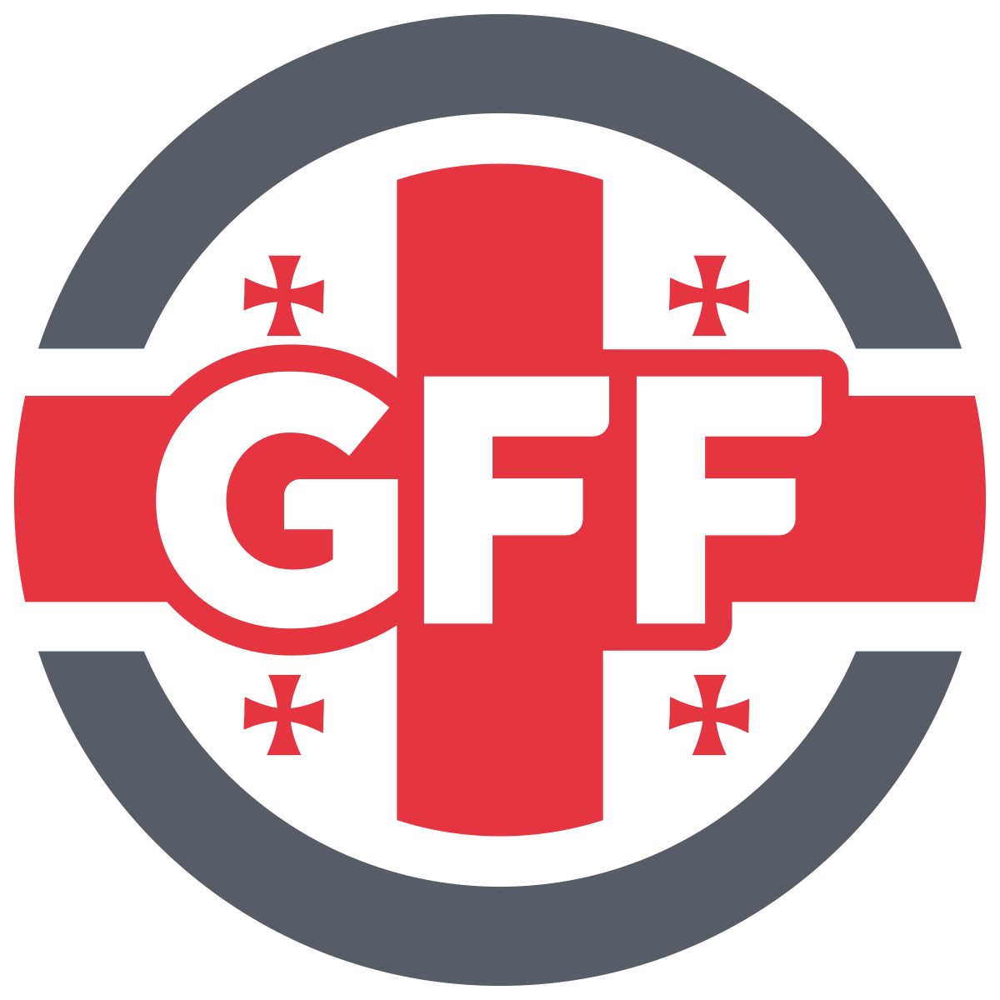
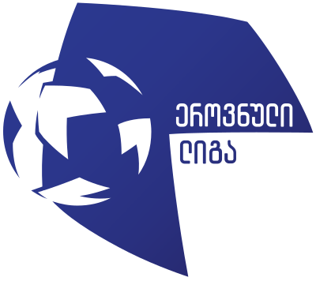

ქართული ფეხბურთი
ფეხბურთი 1906 წელს დედაქალაქში ჩამოყალიბდა, საქართველოში კი 1924 წელს. 120 ქვეყანს უკვე ჰყავდა თავის გუნდი. საქართველოს ფეხით მოთამაშეთა” სწრაფად ძალიან „ბურთის არსებობდა მიხედვით, პირველი კი ისტორიის
ფედერაცია 1990 წლის 15 თებერვალს გახდა საქართველოს წევრი. 17 თებერვალს - 1992 წელს, ხოლო 1993 -ს 3 - ში მალევე, ივნისიდან UEFA-ს მუდმივი ივლისიდან FIFA-ს, ფეხბურთის და – დაარსდა.
საქართველოს პირველი მატჩი
ისტორიული მატჩი თბილისელთა ყიფიანის კეტაშვილის - თბილისის დინამო შეხვედრა გოლით კარში მიერ ჯონი შედგა, გელა გატანილი ქალაქის (იმ არენაზე ერთმანეთს დავით საკუთარ 0-1 ანგარიშით კოლხეთი დროისთვის გუნდმა 1913 პირველ პირველი, ფოთელთა მოიგო მატჩი საპორტო სადაც დასრულდა. ნახევარში და იბერია) გამარჯვებით, თბილისი დინამო კაპიტნის, დაუპირისპირდნენ.
ჯანელიძის დინამო დასწრება 1995 ყველასთვის რეკორდული მატჩს საქართველო-გერმანიის შეხვედრასა დაუკავშირდა წელს, 000-მდე 2 გადმოცემის - 100 კიდევ - დაპირისპირებას. ლივერპულის ხოლო ადამიანი ცნობილ დაესწრო, მატჩს მიხედვით, წლის 1979 მოგვიანებით, და
საქართველოს ფეხბურთის ფედერაცია
დაარსდა 1990 წლის 15 თებერვალს. საქართველო იყო პირველი, რომელმაც დატოვა საბჭოთა კავშირის ფეხბურთის ფედერაცია და დამოუკიდებლობა გამოაცხადა.საბჭოთა კავშირის მოკავშირე რესპუბლიკებს შორის საქართველოს სსრ იყო პირველი, რომელმაც დამოუკიდებლობის გზა აირჩია. 1992 წლის 25 თებერვალს ფიფამ საქართველოს ფეხბურთის ფედერაცია დროებით წევრად მიიღო, ხოლო 3 ივლისს, ციურიხში გამართულ კონგრესზე სრულუფლებიან წევრად აღიარა.
ეროვნული ლიგა
Crystalbet ეროვნული ლიგა — საქართველოს უმაღლესი საფეხბურთო ჩემპიონატი. 1990-2016 წლებში ერქვა უმაღლესი ლიგა. 2019 წლიდან ლიგა მისი პარტნიორის, Crystalbet-ის სახელს ატარებს. ტარდება საქართველოს ფეხბურთის ფედერაციის ორგანიზებით. 1927-1989 წლებში საქართველოს უმაღლესი ლიგა ტარდებოდა როგორც საბჭოთა კავშირის საფეხბურთო ჩემპიონატის რეგიონული შეჯიბრი. ლიგაში 10 გუნდი იღებს მონაწილეობას. უმაღლესი ლიგის ყველაზე ტიტულოვანი კლუბია „დინამო თბილისი“.
Fan Shop
3 ივნისს, თბილისში, საქართველოს ფეხბურთის ფედერაციის ოფიციალური მაღაზია გაიხსნა.
ახალ მაღაზიაში ნაკრების ოფიციალური პროდუქციაა წარმოდგენილი. სათამაშო ფორმასთან ერთად მაღაზიაში, საგულშემატკივრო მაისურებისა და ატრიბუტიკის ყიდვაა შესაძლებელი. განახლებულ კოლექციაში საბავშვო ზომებიც არის გათვალისწინებული.
EURO 2024
საქართველოს ეროვნული ნაკრები გერმანიაში ჩავიდა და ევრო 2024-ისთვის მზადებას ტურნირის მასპინძელ ქვეყანაში გააგრძელებს.
